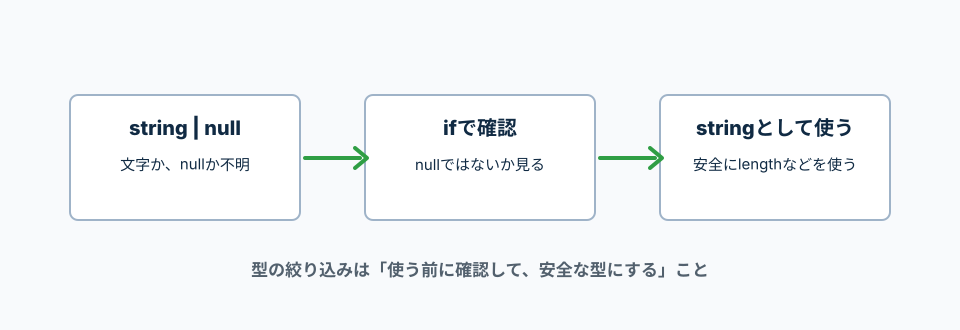

nullや複数候補の型を、ifで安全に使える形にする。
TypeScript公式のNarrowingでは、typeof、if、等価比較などのJavaScriptの条件分岐から、TypeScriptが型を狭める仕組みが説明されている。
初学者はまず「使う前に確認する」と覚える。
値がstringかnullか分からない時、そのまま文字列として使うと危ない。
ifでnullではないことを確認してから使う。

string | null は、文字列かnullのどちらかという意味。
nullではないことを確認すると、その中ではstringとして使える。
const userName: string | null = '太郎';
if (userName !== null) {
console.log(userName.length);
}
string | null
文字列かnullのどちらかが入る。
userName !== null
userNameがnullではないか確認している。!==は「同じではない」という意味。
userName.length
nullではない確認後なので、文字列の長さを安全に取れる。
typeofは、値の種類を調べる。
stringかnumberのどちらかを受け取る時に便利。
function formatId(id: string | number) {
if (typeof id === 'string') {
return id.toUpperCase();
}
return id.toString();
}
typeof id === 'string'
idが文字列かどうか確認している。
id.toUpperCase()
文字列だと分かった後なので、文字列用の処理を使える。
id.toString()
文字列ではない場合はnumberなので、文字列に変換している。
union型は、API通信の状態管理でかなり便利。
statusを見ると、その状態で使える値が分かる。
type RequestState =
| { status: 'idle' }
| { status: 'loading' }
| { status: 'success'; data: string[] }
| { status: 'error'; message: string };
function getMessage(state: RequestState) {
if (state.status === 'success') {
return `${state.data.length}件取得しました`;
}
if (state.status === 'error') {
return state.message;
}
return '読み込み前です';
}
status: 'success'
成功状態だけdataを持つ、と型で決めている。
state.status === 'success'
成功状態だと確認したので、その中ではstate.dataを使える。
status: 'error'
失敗状態だけmessageを持つ、と型で決めている。